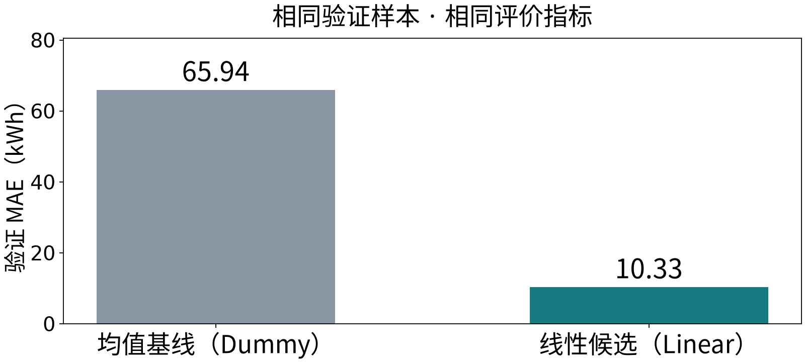

T02 · 机器学习 · 两版共同理论 · 2学时
T01 的均值基线用四个历史能耗值确定常数 200。
模型根据这些历史标签训练，再检查原记录，得到的是训练误差。
过度适应训练记录、对新对象表现较差，称为过拟合。
泛化能力：把已学规则用于训练记录之外的新对象的能力。
先保留一部分记录 → 用其余记录训练 → 对保留对象预测 → 核对标签
标签虽然已经存在于历史表中，但不参加这次训练。
还要问：这些保留对象，是否模拟了任务准备预测的新对象？
活动 A · 先匹配用途，再判断案例
| 数据部分 | 主要工作 | 标签或结果怎样参与方案 |
|---|---|---|
| 训练集 | 训练模型 | 确定参数或预测规则 |
| 验证集 | 比较和选择 | 支持方案调整 |
| 测试集 | 方案确定后的独立检查 | 不参与本轮训练和选择 |
名称由实际用途决定，不由文件名或固定比例决定。
候选 A、B 都只用训练集拟合，却用同一组保留记录的误差选择 A。
保留记录承担验证用途：结果参与了选择。
根据验证结果继续改进是正常工作；反复针对同一批记录调整，判断也可能越来越乐观。
若测试结果参与下一版改进，需要为新版重新安排独立检查。不是禁止继续改进，而是不能沿用旧数据声称新版结论独立。
120 个独立合成批次，按同一个稳定过程生成，无设备重复记录和时间变化趋势。
本次实验：80 条训练 ＋ 40 条验证；没有独立最终测试集。
任务：检查模型能否预测从未见过的设备。
| 划分 | 训练部分 | 验证部分 | 模拟什么？ |
|---|---|---|---|
| 按行随机 | A 的周一记录 | A 的周二记录 | 已有设备的新记录 |
| 按设备分开 | A 的全部记录 | B 的全部记录 | 未参与训练的设备 |
行编号不重叠，只是起点；还要检查真实对象是否跨越两边。
信息越过预定使用边界，可能造成数据泄漏，让分数无法可靠反映目标场景的预测能力。
共有 个样本； 是实际值， 是预测值。
先逐行计算，再平均；RMSE 最后开平方，单位回到目标单位。
活动 B · 先计算，再核对
| 样本 | 实际能耗 | 预测能耗 |
|---|---|---|
| 1 | 10 | 10 |
| 2 | 20 | 18 |
| 3 | 30 | 32 |
| 4 | 40 | 36 |
单位 kWh。写出绝对误差、平方误差，再算 MAE 与 RMSE。
| 样本 | 预测减实际 | 绝对误差 | 平方误差 |
|---|---|---|---|
| 1 | 0 | 0 | 0 |
| 2 | −2 | 2 | 4 |
| 3 | 2 | 2 | 4 |
| 4 | −4 | 4 | 16 |
先对平方误差开方再平均，得到的是 MAE，而不是 RMSE。
两组各 10 个样本，误差单位 kWh。
| 组别 | 绝对误差 | MAE | RMSE |
|---|---|---|---|
| A | 10，随后九个 0 | 1 | |
| B | 十个 1 | 1 | 1 |
MAE 相同，RMSE 对 A 的大误差更敏感。
只能沿同一指标比较模型。不能拿一个模型的 MAE 与另一个模型的 RMSE 比大小。
教师演示 · 先判断，再运行
A、B 始终各 10 条。保持 B 不变，只把 A 的一次误差 big_error 从 10 改为 20，预测两项指标的变化。
核对：10 时 A＝1.00／3.16；20 时 A＝2.00／6.32。B 始终＝1.00／1.00（MAE／RMSE，kWh）。
本例重点检查能否识别超限批次，所以把它作为正类。
正与负是评价角色，不表示好与坏。
活动 C · 行为实际，列为预测
| 实际／预测 | 预测超限 | 预测正常 | 实际合计 |
|---|---|---|---|
| 实际超限 | 8（TP） | 2（FN） | 10 |
| 实际正常 | 12（FP） | 78（TN） | 90 |
| 预测合计 | 20 | 80 | 100 |
“真／假”表示判断是否正确；“正／负”表示预测类别。
FP：误报；FN：漏报。先完成纸笔 C，再翻到指标核对页。
| 指标 | 分母包含谁？ | 本例计算 |
|---|---|---|
| 准确率 | 全部 100 个批次 | (8＋78)／100＝86% |
| 精确率 | 预测超限的 20 个批次 | 8／20＝40% |
| 召回率 | 实际超限的 10 个批次 | 8／10＝80% |
40% 与 80% 可以同时成立：找到了大部分超限，但发出的超限判断中也包含较多误报。
| 规则 | 准确率 | 找到多少超限？ | 带来什么问题？ |
|---|---|---|---|
| 全部预测正常 | 90% | 0／10 | 漏掉全部超限 |
| 本例候选 | 86% | 8／10 | 12 个正常批次被误报 |
| 全部预测超限 | 10% | 10／10 | 90 个正常批次被误报 |
漏报后果严重时重点关注召回率，但也要考虑误报、复核资源和精确率。
活动 D · 假设案例，同一划分与 MAE
| 方法 | 训练 MAE | 验证 MAE |
|---|---|---|
| 简单基线 | 60 | 65 |
| 候选 A（纸笔甲） | 12 | 15 |
| 候选 B（纸笔乙） | 0 | 40 |
事先规定按验证 MAE 选择。应该选谁？为什么训练误差 0 不足以宣布最好？
本次验证 MAE 支持选择 A：15 小于 B 的 40，也小于基线的 65。
训练／验证差距提示检查过拟合，不凭差距直接断定原因。

图中 Dummy 对应均值基线，Linear 对应线性候选。使用固定合成数据、80／40 划分与同一验证指标；这是实际运行结果，区别于上一张假设表。
| 数组 | 含义 | 完整形状 | 划分后的条数 |
|---|---|---|---|
X |
计划产量 | (120, 1) |
80／40 |
y |
对应能耗 | (120,) |
80／40 |
ids |
对应批次编号 | (120,) |
80／40 |
输入、标签、编号一起移动，不分别打乱。
train_test_split 每个输入数组依次返回训练与保留部分；test_size 不决定留出记录的实际角色。
fit 用训练标签调整模型；计算验证结果不再 fit。predict 只读取输入；指标函数随后核对相应标签。辅修补关键步骤；主专业自主组织输入与比较函数。各两实验学时，不新增分类上机。
任务决定划分 → 训练模型 → 验证比较 → 确定方案 → 独立测试
T03 将解释线性模型怎样根据计划产量预测能耗。
活动 E · 5 分钟 · 独立作答
某同学说：
“训练误差最低的模型一定最好；测试集可以反复看，直到找到最高分。”
指出两处问题，并各写一句正确做法。
无需电脑；用几句清楚的话解释数据用途。
机器学习 · T02